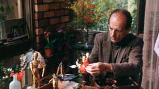

| Man of Flowers/ B+,C |
| Image/1983/91/ANA 1.85 |
Charles Bremer lives in a rich suburban environment surrounded by beautiful things limited only by his own crippled narrow emotional focus. Flowers speak to him, they enrich his static existence. Bremer worships beauty. Bremer's childhood memories are defocused erotic flashes of his mother and other women that come into his household. His father serves as an arm of admonishment. The secret of Bremer's present lies somewhere in this past.
 |
| Charles piddles away the day waiting for something. ©Image |
Every Wednesday, Bremer's little flower Lisa arrives
at his elegant home to perform a tantalizing strip accompanied by beautiful operatic
strains. Charles gazes with little or no expression. It's as if
passion has been stripped from his life. It's a ritual, much
like looking at his flowers. When aroused emotionally, Charles crosses
through his garden to the church across the street and plays the organ.
It's his release.
Lisa lives with a once fashionable artist whose now
on hard times and hard drugs. She begins to rely on her Wednesday Bremer
visits with a sense of desperation. It's only a matter of time before the
in her life collide with interesting effect.
Norman Kaye is eerily on the mark as Charles. He's
detached yet crying to be involved in some way. His emotional rigidly is
reflected in every movement. Alyson Best gives Lisa a
flower-like fragility.
Writer/director Paul Cox blends his flashbacks memory
with a natural sense. The small patient movie is much life a brilliant
still life painting, motionless but vital. This is a first class
treatment.
Happily, the transfer does not get in the way of
enjoying this fascinating film. Source elements are not the greatest.
Film grain is heavy, but consistent. Resolution is less than par. At
least the image is not edgy. Color is good. The paintings and flowers
retain a vitality. Shadow detail is adequate. Blacks achieve deep
levels. Dialogue on the Dolby Digital Mono soundtrack is easy enough to understand. The music is rather thin
but still effective.
Jou Du/A,B-

A sexy Chinese noir. Bold colors paint stirring emotions in a small provincial town.

Selections from the Feature
Archive include articles on
Akira Kurosawa, Frank
Darabont, Blonde
Bimbos, Hollywood
Street Gangs, or Vietnam:
The Hollywood Pariah, and many more....

Catch the Hollywood take on
Blonde Bimbos by clicking on the image above.


Glenn Erickson's insightful DVD reviews have been a Internet fixture for
several years. Check out some of his sophisticated feature articles.
Currently hosted by DVD Talk.

ISF Monitor
Calibrations in the Tristate New York area. Lots of hardware info
and frequent hardware peaks from video expert Kevin Miller. They may be
judgmental, but that's the point, isn't it. Lots of DVD reviews plus
news and more.

MRQE
Find reams of movie and DVD
reviews at the Movie Review Query Engine, a index of reviews appearing
on the Internet.

Mystery writer Fred Hunter digs into classic
films on DVD. Check out his insightful reviews at The
Classics on DVD.

Michael Douglas in Falling Down, looks quizzically at Robert Duval: 'You mean, I'm the bad guy'